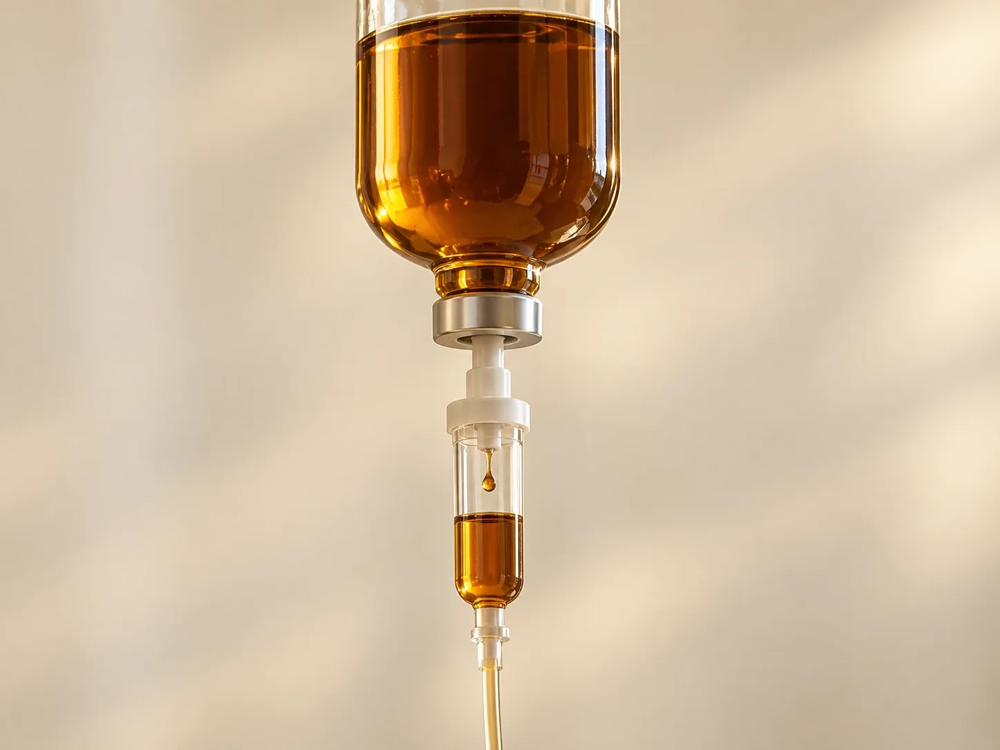

Самочувствие и лечение
Капельница с железом
Программа «Ферробаланс»: внутривенное введение препарата железа по результатам анализов и назначению врача.
Капельницу с железом ставят только по назначению врача после анализов: уровень железа и ферритина. Решение принимает врач на приёме.
- Время
- от 15 до 30 мин
- Стоимость
- от 6 500 ₽
- Программа
- «Ферробаланс», по результатам анализов

Кому назначают
Капельница с железом – это медленное введение препарата железа в вену, когда запас железа в организме нужно восполнить, а таблетки не подходят или не помогают. Такую капельницу ставят в клинике 8.0.8 в Москве, у метро «Римская», только по назначению врача. Записаться можно ежедневно с 9:00 до 21:00.
Капельницу железа назначают при подтверждённом дефиците железа и железодефицитной анемии. Основанием служат анализы: гемоглобин, ферритин и другие показатели обмена железа. Без анализов процедуру не проводят, потому что избыток железа вреден.
В клинике это программа «Ферробаланс»: от 6 500 ₽, процедура длится от 15 до 30 минут. Дозу и число введений врач рассчитывает индивидуально. Сначала нужен приём врача: он проверит анализы и противопоказания и решит, нужна ли вам капельница или достаточно таблеток.
Когда врач может назначить капельницу с железом
- Подтверждённый дефицит железаФерритин и другие показатели обмена железа ниже нормы. Решение о капельнице врач принимает по анализам, а не только по самочувствию.
- Железодефицитная анемияСнижен гемоглобин, и причина в нехватке железа. Слабость, одышка при нагрузке, бледность, частое сердцебиение.
- Низкий ферритин при нормальном гемоглобинеТак бывает при скрытом дефиците железа. Нужна ли капельница или хватит таблеток, врач решает в каждом случае отдельно.
- Таблетки плохо переносятсяТошнота, боль в животе, запоры или диарея мешают принимать железо внутрь нужное время.
- Таблетки не помогаютПоказатели почти не меняются после нескольких месяцев приёма. Врач сначала выясняет причину, а затем предлагает другой путь.
- Железо плохо всасываетсяНапример, при некоторых заболеваниях кишечника или после операций на желудке и кишечнике.
- Обильные менструации и кровопотериЧастая причина дефицита железа у женщин. Важно не только восполнить железо, но и найти причину кровопотери у профильного врача.
- Нужно восполнить запас быстрееКогда врач считает, что ждать эффекта таблеток слишком долго.
- Программа «Ферробаланс»От 6 500 ₽, от 15 до 30 минут, по результатам анализов. Точную стоимость назовёт администратор после назначения врача.
Противопоказания
- Нет дефицита железаЕсли запас железа достаточный или повышен, капельницу не ставят: избыток железа откладывается в органах и вредит им.
- Анемия другой природыНе всякая анемия связана с железом. При нехватке витамина B12 или фолиевой кислоты и при других видах анемии железо не поможет.
- АллергияРеакции на препараты железа или другие лекарства, введённые в вену, в прошлом.
- Острая инфекция и обостренияВысокая температура, острое воспаление, обострение хронического заболевания: процедуру переносят.
- Тяжёлые заболевания печениРешение принимает врач после осмотра и анализов.
- Беременность и кормление грудьюОбязательно скажите об этом врачу заранее.
- Полный списокПротивопоказания уточнит врач на приёме.
Как проходит процедура
- Приём врачаТерапевт расспросит о самочувствии, питании, хронических заболеваниях и лекарствах, посмотрит анализы. Приём терапевта стоит 5 000 ₽.
- АнализыЕсли свежих результатов нет, врач скажет, какие анализы сдать. Капельницу ставят только при подтверждённом дефиците.
- Расчёт дозыВрач рассчитывает дозу и число введений по анализам и массе тела.
- КапельницаРаствор поступает в вену медленно, от 15 до 30 минут. Медицинский персонал следит за самочувствием и местом укола.
- Наблюдение послеПосле капельницы немного побудьте в клинике. Если всё в порядке, можно возвращаться к обычным делам.
Как подготовиться
- АнализыСвежие результаты общего анализа крови, ферритина и других показателей обмена железа, если они есть.
- Список лекарствВключая таблетки железа, витамины и БАДы. Обычно железо внутрь не принимают одновременно с капельницей, но решает врач.
- АллергииВспомните, были ли реакции на лекарства, особенно на уколы и капельницы.
- Не приходите голоднымЕсли врач не сказал иначе, поешьте за 1–2 часа до процедуры.
- Удобная одеждаРукав, который легко поднять выше локтя.
После процедуры
После капельницы врач расскажет:
- какие ощущения в первые дни возможны и когда звонить в клинику
- нужно ли следующее введение и когда
- когда повторить анализы, чтобы оценить запас железа
- нужно ли дальше принимать железо внутрь и как питаться
- к какому врачу обратиться, чтобы найти причину дефицита
Дефицит железа и анемия
Железо нужно для образования гемоглобина, который переносит кислород к тканям. Когда железа не хватает, организм сначала расходует запас, и падает ферритин. Гемоглобин ещё может быть в норме: это скрытый дефицит железа. Если запас исчерпан, снижается и гемоглобин. Так развивается железодефицитная анемия.
Признаки дефицита железа неспецифичны: слабость и быстрая утомляемость, одышка и сердцебиение при нагрузке, бледность, выпадение волос, ломкие ногти, сухая кожа, тяга к мелу или льду. Такие же жалобы бывают и при других состояниях, поэтому без анализов дефицит не подтвердить.
Частые причины: обильные менструации, скрытые кровопотери, питание с малым количеством мяса, беременность в прошлом, плохое всасывание железа в кишечнике. Капельница восполняет запас, но не устраняет причину. Поэтому врач ищет и её.
Капельница или таблетки
Обычно дефицит железа восполняют таблетками. Это удобно, но запас восстанавливается медленно, за несколько месяцев. Часть людей плохо переносит железо внутрь, а у некоторых оно почти не всасывается.
Железо внутривенно поступает сразу в кровь, минуя кишечник. Поэтому капельницу врач может предложить, когда таблетки не подходят. Решение всегда принимает врач.
- ТаблеткиПодходят большинству. Принимаются дома, курсом. Возможны тошнота, тяжесть в животе, запоры.
- КапельницаДля тех, кому таблетки не подходят или не помогают. Проводится в клинике, под наблюдением медицинского персонала.
- Возможные реакции на капельницуГоловная боль, тошнота, металлический привкус, ощущение жара, головокружение, изменение давления. Редко бывают аллергические реакции, поэтому процедуру проводят только в медицинских условиях.
Если во время капельницы появились зуд, сыпь, затруднённое дыхание или жжение в месте укола, сразу скажите персоналу. Раствор, попавший под кожу, может оставить коричневое пятно, поэтому важно не терпеть неприятные ощущения.
Какие анализы сдают до и после
Перед капельницей врач смотрит не одну цифру, а несколько показателей вместе. Обычно это:
- Общий анализ кровиГемоглобин, эритроциты и их размер. По ним видно, есть ли анемия.
- ФерритинПоказывает запас железа в организме. Низкий ферритин считается главным признаком дефицита железа.
- Сывороточное железо и трансферринПомогают понять, сколько железа доступно организму сейчас.
- Маркеры воспаленияПри воспалении ферритин может быть нормальным даже при дефиците. Какие показатели нужны вам, решит врач.
Нормы зависят от лаборатории, пола и возраста, поэтому результаты оценивает врач. Повторные анализы обычно сдают через несколько недель после капельницы: раньше ферритин может выглядеть выше, чем есть на самом деле. Срок назначит врач.
Стоимость
Вопросы
Сколько стоит капельница с железом?
Программа «Ферробаланс» стоит от 6 500 ₽. Стоимость зависит от назначения: точную цену назовёт администратор после приёма врача. Приём терапевта стоит 5 000 ₽.
Как записаться на капельницу с железом?
По телефону +7 (995) 656-33-96, ежедневно с 9:00 до 21:00. Сначала назначается приём врача, затем процедура.
Где поставить капельницу с железом в Москве?
В клинике 8.0.8: Москва, ул. Сергия Радонежского, 15–17, стр. 2, этаж 1. Рядом станции метро «Римская» и «Площадь Ильича».
Можно ли поставить капельницу железа без анализов?
Нет. Её назначают только при подтверждённом дефиците железа. Без анализов есть риск ввести лишнее железо, а избыток вреден.
Какой ферритин считается низким?
Нормы зависят от лаборатории, пола и возраста. При воспалении ферритин может быть в норме даже при дефиците. Поэтому низкий ферритин врач оценивает вместе с гемоглобином и другими показателями.
Сколько капельниц нужно?
Это зависит от того, насколько велик дефицит железа. Иногда достаточно одного введения, иногда нужно несколько. Дозу и число введений рассчитывает врач.
Как быстро почувствуется эффект?
Железо поступает в кровь сразу, а гемоглобин и самочувствие меняются постепенно, обычно за несколько недель. Как идёт восстановление, врач оценит по повторным анализам.
Какие могут быть побочные реакции?
Головная боль, тошнота, металлический привкус, ощущение жара, головокружение. Редко бывают аллергические реакции. Поэтому процедуру проводят под наблюдением, а после неё просят немного побыть в клинике.
Нужно ли пить железо в таблетках после капельницы?
Это решает врач. Обычно таблетки не принимают одновременно с капельницей, а нужно ли продолжать позже, зависит от анализов.
Можно ли после капельницы идти на работу?
Обычно да. Если появились слабость или головокружение, скажите персоналу и не садитесь за руль, пока они не пройдут.
Как добраться
- АдресМосква, ул. Сергия Радонежского, 15–17, стр. 2, этаж 1
- Метро«Римская» и «Площадь Ильича»
- Часы работыЕжедневно с 9:00 до 21:00
- Телефон+7 (995) 656-33-96
Имеются противопоказания. Необходима консультация специалиста.